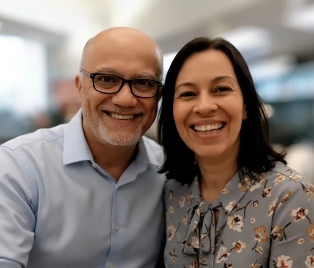

Raízes e formação
Nascido em Paracambi, filho de um lar de fé, aprendeu desde cedo valores de amor a Deus, amor às pessoas e compromisso com a verdade.
Um ambiente premium para liderar, aprender e transformar ideias em ação. Centralize conteúdos, relatórios, materiais e ferramentas em uma experiência elegante, clara e poderosa.

Nascido em Paracambi, filho de um lar de fé, aprendeu desde cedo valores de amor a Deus, amor às pessoas e compromisso com a verdade.
Mais de quatro décadas dedicadas à pregação, ao discipulado e à formação de líderes em igrejas, missões e projetos evangelísticos.
Como pastor, professor e escritor, continua inspirando pessoas a viverem a realidade do Reino de Deus onde estiverem.
Visão estratégica de indicadores, foco de atuação e acompanhamento em tempo real para decisões com maior clareza.
Audiobooks, playbooks, artigos e recursos de desenvolvimento para crescimento pessoal, ministerial e profissional.
Organização, gestão e apresentação de ideias com uma estrutura visual sofisticada e alinhada à liderança moderna.
Gilberto Penido Bertho, filho de Arnaldo dos Santos Bertho e Ruth Penido Bertho, nasceu em Paracambi - RJ, no dia 29/06/1959. Tem cinco irmãos: Reinaldo, Aloizio, Reginaldo, Lea Consuelo e Roberto. Desses cinco irmãos, dois são Pastores, Aloizio e Reginaldo.
Por muitos anos tem percorrido o Brasil como discipulador, treinando pastores e igrejas dentro deste empolgante método de evangelismo e discipulado.
Possui os graus de Bacharel em Teologia, Educação Religiosa e Pós-Graduado em Psicanálise Clínica.
Em mais de quatro décadas de ministério, pastoreou diversas igrejas em Minas Gerais, trabalhou como missionário da CBM em parceria com a JMN. Durante seu ministério organizou a Igreja Batista Central de Três Corações, a Segunda Igreja Batista de Varginha e a Terceira Igreja Batista de Varginha. Coordenou projetos especiais de evangelização, como a Trans-Uberlândia, a Trans-Triângulo e coordenou a Campanha "Minha Esperança Brasil", da Associação Evangelística Billy Graham, em MG.
Foi diretor e professor do Seminário Teológico Batista do Triângulo Mineiro. Em 2006 foi o relator do comitê de evangelismo e missões da Convenção Batista Mineira.
Casou-se com Mara Raquel, no dia 5 de fevereiro de 1985, e desta abençoada e feliz união, nasceu seu único filho Jônatas. Pr. Gilberto também é docente do Instituto Haggai do Brasil.
"Os irmãos seguiram passo a passo as orientações e colheram os frutos: 60 membros trouxeram 240 visitantes. 84 decisões, 45 pedidos de visitas e 22 de estudos bíblicos."
"Recebemos cerca de 300 pessoas não crentes. Houve mais de 120 decisões, os conselheiros não deram conta de anotar todos os nomes. Toda glória ao Pai!"
"O culto do amigo foi maravilhoso. Mais de 300 pessoas dentro do templo e muitos do lado de fora. Muitas conversões. Obrigado por compartilhar essa estratégia."
"Realizamos na quadra, tivemos mais de 800 convidados! 115 pessoas abriram seus corações para Jesus. Discipulado já está direcionando estudos bíblicos nos lares."
"Realizamos o 'Culto 10' e colhemos muitos frutos. Foram 545 pessoas que entregaram suas vidas a Jesus, e como resultado, 106 foram batizadas."
"Nosso culto foi uma maravilha. Tivemos mais de 400 pessoas. E somos apenas 125 membros. A igreja está muito feliz com o resultado. Deus te abençoe!"